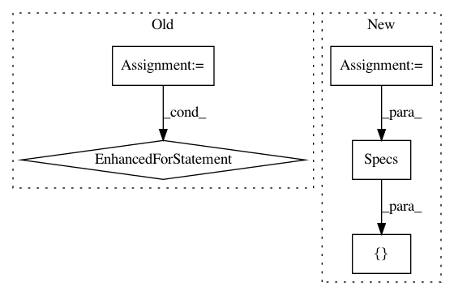

ac0b7e4b3d8267c682b2e821f8db592ca94103e3,src/python/pants/engine/legacy/address_mapper.py,LegacyAddressMapper,scan_build_files,#LegacyAddressMapper#Any#,34
Before Change
def scan_build_files(self, base_path):
request = self._scheduler.execution_request([BuildFilesCollection], [(DescendantAddresses(base_path))])
result = self._scheduler.execute(request)
if result.error:
raise result.error
build_files_set = set()
for _, state in result.root_products:
for build_files in state.value.dependencies:
build_files_set.update(f.path for f in build_files.files_content.dependencies)
return build_files_set
@staticmethod
def any_is_declaring_file(address, file_paths):
After Change
self._build_root = build_root
def scan_build_files(self, base_path):
specs = (DescendantAddresses(base_path),)
build_files_collection, = self._scheduler.product_request(BuildFilesCollection, [Specs(specs)])
build_files_set = set()
for build_files in build_files_collection.dependencies:
In pattern: SUPERPATTERN
Frequency: 3
Non-data size: 5
Instances
Project Name: pantsbuild/pants
Commit Name: ac0b7e4b3d8267c682b2e821f8db592ca94103e3
Time: 2018-03-18
Author: stuhood@twitter.com
File Name: src/python/pants/engine/legacy/address_mapper.py
Class Name: LegacyAddressMapper
Method Name: scan_build_files
Project Name: pantsbuild/pants
Commit Name: ac0b7e4b3d8267c682b2e821f8db592ca94103e3
Time: 2018-03-18
Author: stuhood@twitter.com
File Name: src/python/pants/engine/legacy/graph.py
Class Name: LegacyBuildGraph
Method Name: _inject_specs
Project Name: pantsbuild/pants
Commit Name: ac0b7e4b3d8267c682b2e821f8db592ca94103e3
Time: 2018-03-18
Author: stuhood@twitter.com
File Name: src/python/pants/engine/legacy/source_mapper.py
Class Name: EngineSourceMapper
Method Name: iter_target_addresses_for_sources